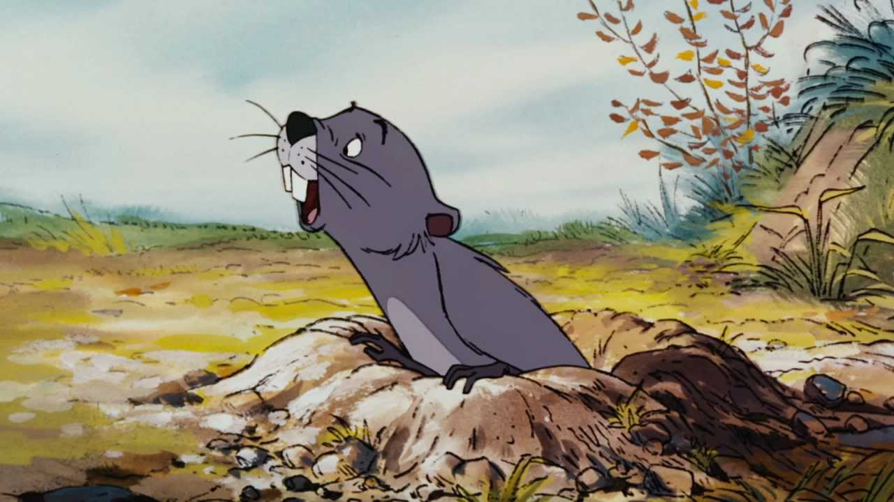

Gopher’s full name is Samuel J. Gopher. Gopher wasn’t a part of the original stories and poems written by A.A. Milne and was introduced by Walt Disney as the felt that the then existing characters of Winnie the Pooh weren’t American enough for the American audience to be able to relate to. This fact is recurrently pointed out he says "I'm not in the book you know." Gopher is a Bricklayer, Builder, Excavation and Demolition Expert. His address is perhaps more apt when describes as all over the 100 Acre Woods as he lives under tunnels he creates. What he likes doing most is working on projects that involve building tunnels or projects which could be used by the other members in the forest. Gopher is 15 inches tall and the biggest problem he will encounter is that he falls into the tunnels that he engineered. Since he is a Walt Disney character there are neither illustration of him nor is he there in the stories written by A.A. Milne.
